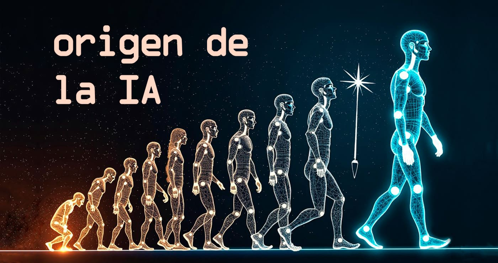

Historia de la Inteligencia Artificial

- Introducción
- Los inicios de la ia
- Primeros avances y dificultades
- El desarrollo del aprendizaje automatico
- La ia en la actualidad
- El invierno de la ia
- La llegada del internet y los grandes datos
- El auge de la ia generativa
- La expansion de la ia en la vida cotidiana
Introducción
La inteligencia artificial, también conocida como IA, es una tecnología que permite a las máquinas realizar tareas que normalmente requieren inteligencia humana, como aprender, resolver problemas o mantener conversaciones. Aunque actualmente está presente en muchos aspectos de nuestra vida cotidiana, como los teléfonos móviles, las redes sociales o los asistentes virtuales, su desarrollo comenzó hace varias décadas y ha evolucionado de forma muy rápida en poco tiempo.
Los inicios de la IA
La idea de crear máquinas capaces de pensar existe desde hace mucho tiempo, pero uno de los primeros científicos en estudiar esta posibilidad de manera seria fue Alan Turing. En 1950 publicó un estudio en el que planteaba la pregunta de si las máquinas podían pensar igual que los seres humanos. Además, creó el famoso “Test de Turing”, una prueba diseñada para comprobar si una máquina podía mantener una conversación sin que una persona supiera que estaba hablando con un ordenador.
El nacimiento oficial de la inteligencia artificial tuvo lugar en 1956 en Dartmouth College, durante una conferencia en la que participaron científicos como John McCarthy. Fue allí donde se utilizó por primera vez el término “inteligencia artificial”. En aquel momento, los investigadores pensaban que en pocos años las máquinas podrían realizar tareas similares a las humanas, aunque pronto descubrieron que era mucho más difícil de lo que parecía.
Fechas importantes
1950: Alan Turing publica sus estudios sobre la posibilidad de que las máquinas piensen.
1956: nace oficialmente la inteligencia artificial en la conferencia de Dartmouth.
Décadas de 1960 y 1970: se desarrollan los primeros programas capaces de resolver problemas simples y jugar al ajedrez.

Primeros avances y dificultades
Las primeras inteligencias artificiales funcionaban mediante reglas programadas por humanos. Los ordenadores seguían instrucciones concretas para responder a determinadas situaciones. Aunque estos sistemas podían resolver operaciones matemáticas o realizar tareas básicas, tenían muchas limitaciones porque no eran capaces de aprender por sí solos.
Durante los años setenta y ochenta, el desarrollo de la IA se ralentizó mucho debido a la falta de resultados importantes. Además, los ordenadores de aquella época no tenían suficiente potencia para realizar cálculos complejos. A este periodo se le conoce como el “invierno de la IA”, ya que muchas empresas y gobiernos dejaron de invertir dinero en este campo.
El desarrollo del aprendizaje automático
A partir de los años noventa, la inteligencia artificial volvió a avanzar gracias al desarrollo del machine learning o aprendizaje automático. Esta nueva forma de trabajar permitía que las máquinas aprendieran analizando grandes cantidades de datos y detectando patrones, en lugar de seguir únicamente reglas programadas por personas.
Uno de los momentos más importantes ocurrió en 1997, cuando Deep Blue, desarrollado por IBM, derrotó al campeón mundial de ajedrez Garry Kasparov. Este acontecimiento demostró que una máquina podía superar a un ser humano en una tarea considerada muy compleja.
Más adelante, en 2016, AlphaGo venció al jugador profesional Lee Sedol en el juego de Go, considerado todavía más difícil que el ajedrez por la enorme cantidad de movimientos posibles.
Avances importantes
1997: Deep Blue derrota a Garry Kasparov.
2011: el sistema Watson gana un famoso concurso de televisión respondiendo preguntas.
-
2016: AlphaGo vence a Lee Sedol en el juego de Go.
 volver al indice
volver al indice

La IA en la actualidad
En los últimos años, la inteligencia artificial ha avanzado muchísimo gracias al desarrollo del deep learning o aprendizaje profundo, una tecnología inspirada en el funcionamiento de las neuronas del cerebro humano. Además, el aumento de la potencia de los ordenadores y la enorme cantidad de información disponible en internet han permitido crear sistemas mucho más avanzados.
Actualmente, la IA se utiliza en muchos ámbitos diferentes, como la medicina, la educación, la seguridad, las redes sociales o los asistentes virtuales. También existen herramientas capaces de generar textos, imágenes, vídeos o música en pocos segundos.
Empresas como OpenAI y Google han sido fundamentales en el desarrollo de estas tecnologías. Desde 2022, la llamada “IA generativa”, como ChatGPT, se ha popularizado enormemente y ha cambiado la forma en la que muchas personas estudian, trabajan y se comunican.
El “invierno de la IA” y la recuperación
Después del entusiasmo inicial de las décadas de 1950 y 1960, muchos científicos y empresas comenzaron a darse cuenta de que la inteligencia artificial era mucho más complicada de desarrollar de lo que pensaban. Las máquinas todavía cometían muchos errores y los resultados no cumplían las expectativas.
Además, los ordenadores de aquella época tenían poca capacidad de memoria y procesamiento, lo que limitaba enormemente el desarrollo de sistemas más avanzados. Como consecuencia, durante los años setenta y parte de los ochenta muchas empresas y gobiernos redujeron las inversiones destinadas a la investigación en inteligencia artificial.
A este periodo se le conoce como el “invierno de la IA”. Sin embargo, algunos investigadores continuaron trabajando y sentaron las bases para los avances posteriores que llegarían años más tarde.
La llegada de internet y los grandes datos
El crecimiento de internet durante los años noventa y principios de los 2000 tuvo un papel fundamental en la evolución de la inteligencia artificial. Gracias a internet, comenzó a existir una enorme cantidad de información digital que podía utilizarse para entrenar sistemas inteligentes.
Al mismo tiempo, los ordenadores se volvieron más rápidos y potentes, permitiendo realizar cálculos mucho más complejos. Esto hizo posible que las máquinas aprendieran de millones de datos en menos tiempo y con mayor precisión.
La combinación entre grandes cantidades de información, mejores algoritmos y ordenadores más potentes permitió el desarrollo de inteligencias artificiales mucho más avanzadas que las de décadas anteriores.
El auge de la IA generativa
A partir de la década de 2020, la inteligencia artificial experimentó un crecimiento enorme gracias a la llamada “IA generativa”. Estos sistemas son capaces de crear contenido nuevo, como textos, imágenes, música o vídeos, a partir de instrucciones escritas por los usuarios.
Herramientas como ChatGPT popularizaron el uso de la IA entre millones de personas en todo el mundo. Por primera vez, muchas personas pudieron interactuar directamente con sistemas capaces de mantener conversaciones, responder preguntas o ayudar en tareas cotidianas.
Este avance convirtió a la inteligencia artificial en una de las tecnologías más importantes y debatidas de la actualidad.
La expansión de la IA en la vida cotidiana
Con el paso de los años, la inteligencia artificial comenzó a formar parte de la vida diaria de muchas personas, incluso sin que estas se dieran cuenta.
Actualmente, numerosos dispositivos y aplicaciones utilizan IA para funcionar: los teléfonos móviles reconocen la voz y las caras de los usuarios, las plataformas digitales recomiendan películas y canciones, y los navegadores calculan rutas de tráfico en tiempo real.
La presencia de la IA en la vida cotidiana demuestra cómo esta tecnología ha pasado de ser una idea experimental a convertirse en una herramienta habitual en la sociedad moderna.